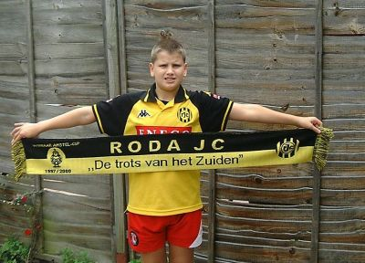

|
Luke uit London in Kerkrade (10 augustus 2001) |
|  |
| Valley Floyd Road The mist rolling in from the Thames My desire Is always to be found At Valley Floyd Road. Many miles have I travelled Many games have I seen Following Charlton My favourite team Many hours have I spent In the covered end choir Singing Valley Floyd Road My only desire. |